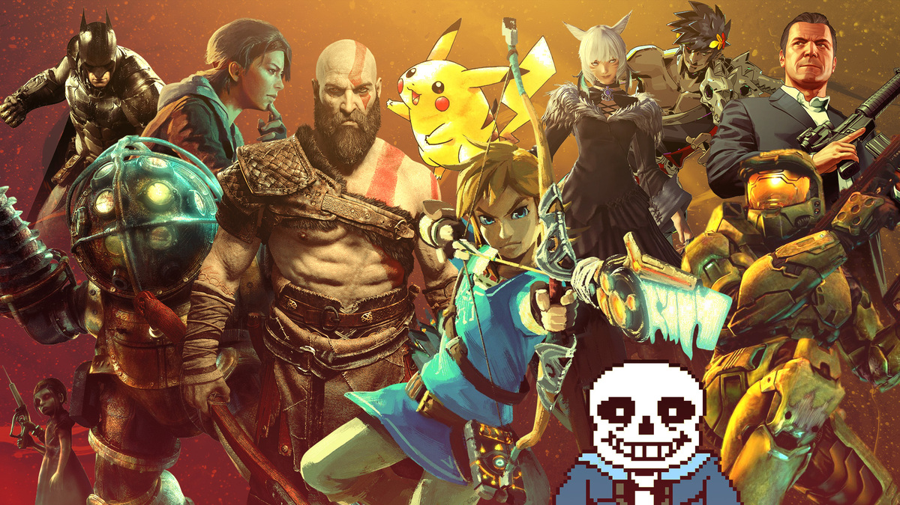
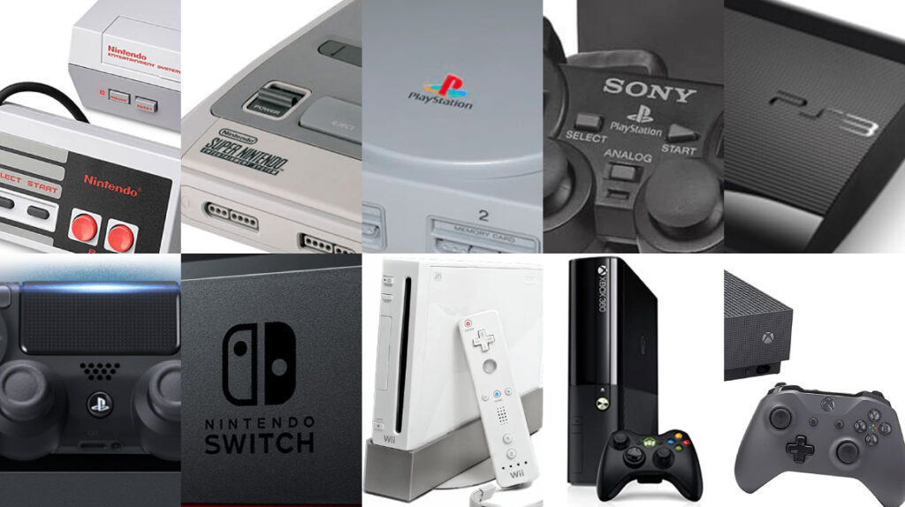
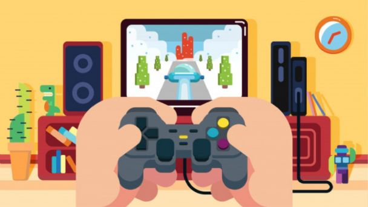

| Los 8 mejores videojuegos de la historia |
- Tetris
- Pacman
- Halo
- Super Mario
- God of war
- Pokémon
- GTA: San Andreas
- Zelda
|

|
| Las mejores consolas para jugar |
- Xbox serties S
- PlayStation 4
- Nintendo Switch
- Consola Retro Arcade
- Xbox 360
- Xbox One
- PlayStation 5
|

|
| Tipos de Gamers |
- Hardcore gamer
- Son conocidos como pro-gamers, para estos jugadores los videojuegos no son un pasatiempo o un entretenimiento ligero, sino una afición seria.
- Casual gamer
- Son aquellos que entienden los videojuegos como un pasatiempo ligero, algo con lo que divertirse, pero sin que les suponga una gran exigencia o dificultad.
- Professional gamer
- Es un jugador con una habilidades para jugar fuera de lo normal. Su nivel le lleva a poder participar en competiciones oficiales e incluso a trabajar para compañias desarrolladoras de videojuegos.
|

|